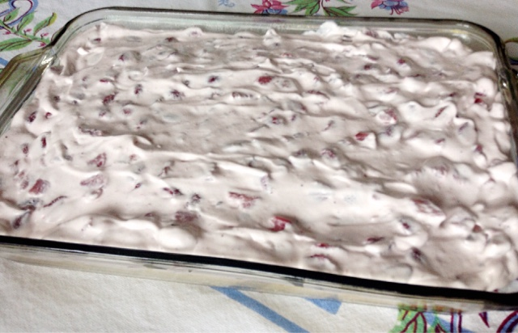

Strawberry Yogurt Cake
INGREDIENTS
For the cake
1 box super moist white cake mix
16 oz strawberry yogurt
3 egg whites
1/2 cup water
1/4 cup oil
For the topping
1 tub whipped topping, thawed
1 package frozen strawberries, chopped
1 cup strawberry yogurt
DIRECTIONS
Preheat oven to 350°F.Add all of the cake ingredients to a large mixing bowl and mix well to combine.
Pour the batter into a 13x9 dish. Bake the cake for about 35 minutes.
Use a toothpick to make sure the cake is done. Insert it into the center of the cake and if it is done it will come out clean.
When the cake is done, remove it from the oven and allow to cool completely.

For the topping
Add the ingredients for the topping into a large mixing bowl and stir together with a spatula. Make sure the ingredients are well combined.
When the cake is completely cooled. Add the topping to the cake and spread it out.
Slice and enjoy!
PRINT RECIPE